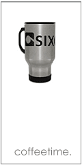

issue 9 out now - feartures
It’s like Miss Manners after a few pulls of Mad Dog. You’ve considered being courteous. You’re supposed to be considerate. But when the going gets tough, do the tough really get cordial? Writer Tom Hardman guides us through contemporary etiquette standards.
Choose your Own Adventure: It’s Thursday Night - - You Choose the Story.
Writer Jason Heidemann drew the map, now you have to figure out the path. Maybe you’ll go to the Field Museum. Maybe you’ll have a run-in with Edna St. Vincent Millay. Wild endings and sorry endings await you on this click-n-go thrill.
Fashion Photo: I WANT
The must haves of the season deserve a little fighting over. Go ahead. Wrestle for that $1000 handbag. That $385 tie is worth a few punches. Photographer Christine Mladic witnessed the mayhem that broke out at the Darkroom over the latest in fall fashion.



1259 N. Milwaukee Ave Chicago IL 60622